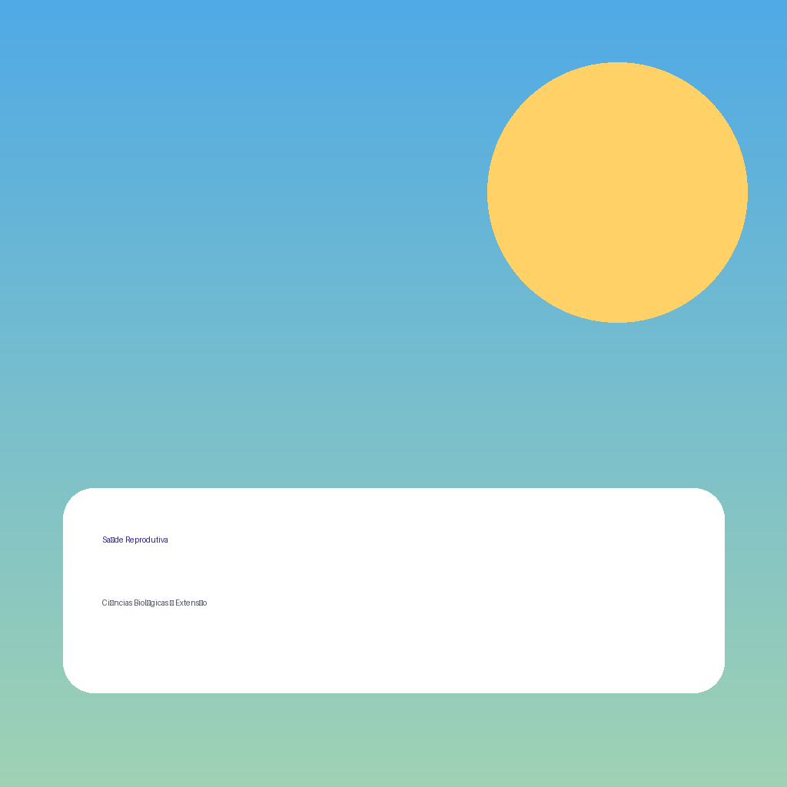
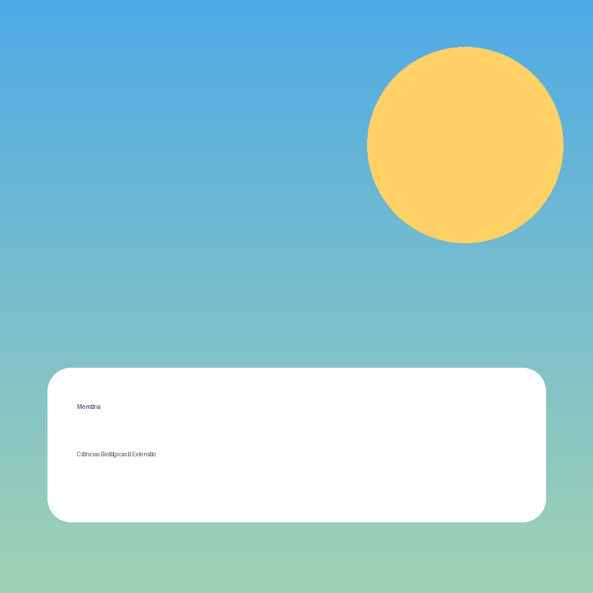
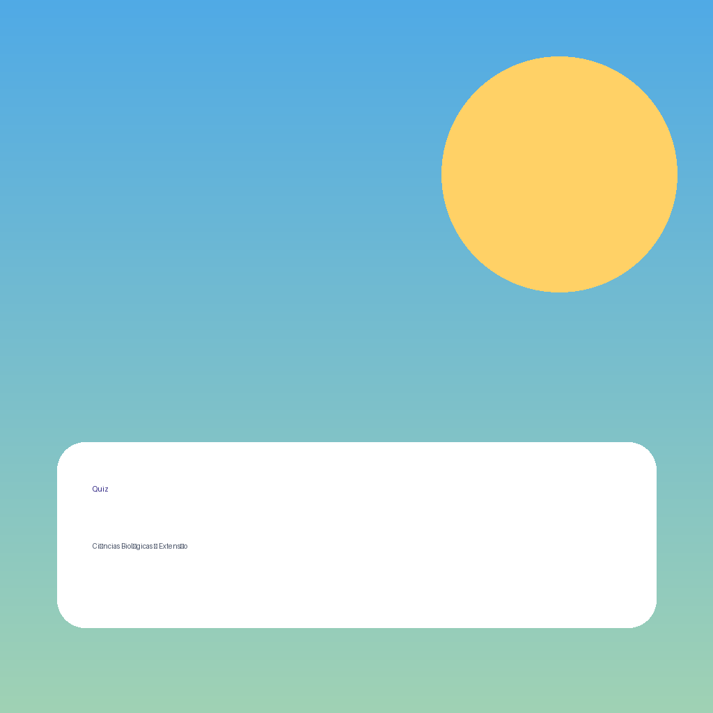
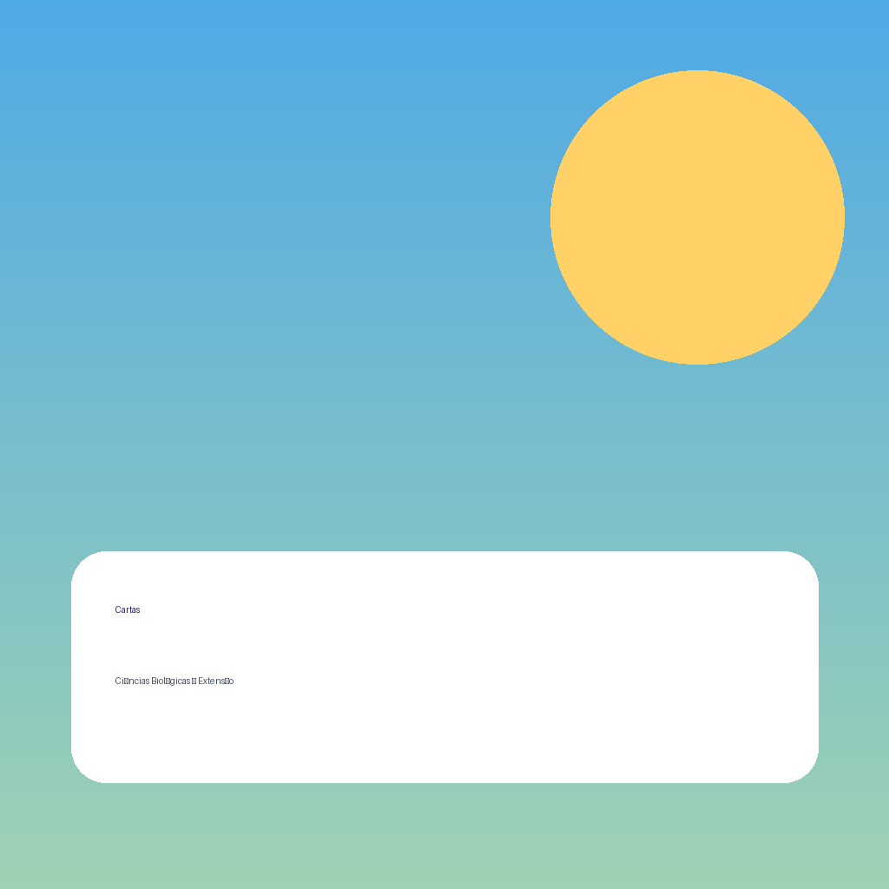

Amanhã • Semana 5
Criar conta no GitHub, organizar pastas, definir jogo, planejar imagens, escolher sons e montar o PWA base.
0% concluído
Plataforma PWA para orientar grupos de Ciências Biológicas na criação de jogos educativos extensionistas sobre sistema reprodutor, prevenção, autocuidado, IST, educação em saúde e divulgação científica.
Este app é educativo. Não substitui consulta médica, atendimento em saúde, aconselhamento profissional ou protocolos institucionais.

Criar conta no GitHub, organizar pastas, definir jogo, planejar imagens, escolher sons e montar o PWA base.
Gerar o HTML do jogo escolhido, adaptar conteúdo biológico e iniciar testes de interação.
Melhorar acessibilidade, corrigir erros, publicar no GitHub Pages e testar no celular.
Finalizar relatório científico, anexar prints, gerar PDF e preparar apresentação final.
Acesse github.com pelo navegador.
Clique em Sign up.
Digite seu e-mail, crie senha e escolha um nome de usuário.
Confirme o e-mail e faça login.
Clique em + e depois em New repository.
Use um nome simples: Bio-Repro-PWA. Marque Public e clique em Create repository.
O HTML não guarda imagens nem sons dentro dele. Ele aponta para arquivos que ficam em pastas. Por isso os nomes precisam ser exatamente iguais.
Bio-Repro-PWA/
├── index.html
├── style.css
├── app.js
├── relatorio.js
├── prompts.js
├── manifest.json
├── sw.js
└── assets/
├── img/
│ ├── fundo-repro.png
│ ├── robo-repro.png
│ ├── capa-repro.png
│ ├── memoria-repro.png
│ ├── quiz-repro.png
│ ├── cartas-repro.png
│ ├── cruzadas-repro.png
│ ├── mapa-repro.png
│ └── trofeu-repro.png
├── audio/
│ ├── clique.mp3
│ ├── sucesso.mp3
│ ├── erro.mp3
│ ├── vitoria.mp3
│ └── ambiente.mp3
└── icons/
├── icon-192.png
└── icon-512.png
Use imagens educativas, respeitosas, sem exposição explícita, adequadas para ambiente universitário e extensão em saúde.
O jogo deve ensinar prevenção e autocuidado sem constranger participantes. A linguagem deve ser científica, simples e inclusiva.

Pares de imagem/conceito: anatomia, prevenção, exames, autocuidado e IST.

Perguntas de múltipla escolha com explicações simples após cada resposta.

Cartas com situação, conduta preventiva e explicação biológica.
Vocabulário científico: gametas, ciclo, IST, contracepção, exames e saúde.
Jogo de associação entre estruturas, funções e práticas de autocuidado.
Escolha um jogo na aba anterior. Depois copie o prompt e peça para a IA gerar o HTML do jogo.
Bom para cliques, sucesso e música ambiente leve.
Efeitos curtos para interface e jogos educativos.
Biblioteca ampla. Verifique licença e créditos.
Muitos efeitos, geralmente exige cadastro gratuito.
O grupo pode gravar narrações curtas no celular.
clique.mp3 = som de botão sucesso.mp3 = resposta correta erro.mp3 = revisar/corrigir vitoria.mp3 = conclusão ambiente.mp3 = música opcional
PWA é um site que pode ser instalado no celular. Para isso, precisa de manifest, service worker e ícones.
if ('serviceWorker' in navigator) {
navigator.serviceWorker.register('sw.js');
}
Depois de publicar no GitHub Pages, abra no celular e toque em “Adicionar à tela inicial”.
Confira letras maiúsculas/minúsculas e se a imagem está em assets/img.
O navegador só libera áudio depois do primeiro clique do usuário.
Espere alguns minutos, confira se a branch é main e a pasta é /root.
Use imagens em formato retrato ou paisagem comum. O app ajusta para caber sem corte.
Olá! Eu ajudo seu grupo a construir um jogo educativo extensionista sobre sistema reprodutor, prevenção e autocuidado.